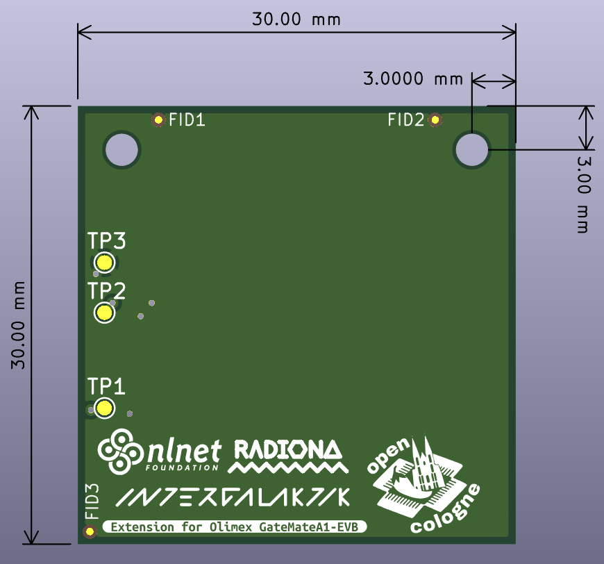

This template forms the basis extension for a board Olimex GateMateA1-EVB, including the appropriate board outline and header locations.
Note: you can use this templete to speed up creation of your own extension board.

(c) 2024 Intergalaktik d.o.o.